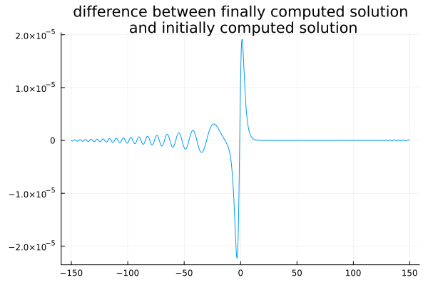
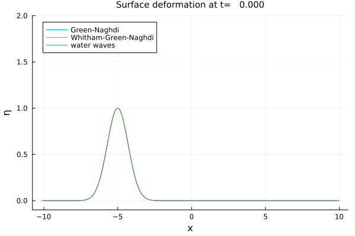

Comparison of the Serre-Green-Naghdi and Whitham-Green-Naghdi models


We provide a comparative analysis of the Serre-Green-Naghdi model (SGN) with a fully dispersive counterpart, named Whitham-Green-Naghdi (WGN). A more thorough analysis, reproducing the figures in V. Duchêne and C. Klein, is available at examples/StudyWhithamGreenNaghdi.jl.
Import package
using WaterWaves1D, FFTW, PlotsSolitary wave comparison
Generate solitary waves
Physical parameters. Variables are non-dimensionalized as in Lannes, The water waves problem, isbn:978-0-8218-9470-5 Numerical parameters
param = ( μ = 1, # shallow-water dimensionless parameter ϵ = 1, # nonlinearity dimensionless parameter c = 1.05, # velocity of the solitary wave N = 2^10, # number of collocation points L = 150, # half-length of the numerical tank (-L,L));Compute the WGN solitary wave with velocity c (type ?SolitaryWaveWhithamGreenNaghdi for more details)
(ηWGN, uWGN, vWGN, mesh) = SolitaryWaveWhithamGreenNaghdi(param, verbose = false);[ Info: Converged : relative error 4.229792473864084e-16 in 3 stepsCompute the SGN solitary wave with velocity c (there is an exact formula)
(ηSGN, uSGN, vSGN) = SolitaryWaveSerreGreenNaghdi(param);The difference beween the Serre-Green-Naghdi (SGN) and Whitham-Green-Naghdi (WGN) solitary waves is more easily seen on Fourier coefficients
plt = plot( mesh.x, [ηWGN ηSGN]; title = "solitary wave profile (surface deformation)", xlabel = "x", label = ["WGN" "SGN"])display(plt)plt = plot( fftshift(mesh.k), [abs.(fftshift(fft(ηWGN))) .+ eps() abs.(fftshift(fft(ηSGN))) .+ eps()]; title = "Fourier modes (modulus, log scale)", label = ["WGN" "SGN"], yscale = :log10)display(plt)Validate the solitary wave through time integration
T = 2 * param.L / param.c # final time of computationdt = T / 10^3 # timestepinit = Init(mesh, ηWGN, vWGN); # use solitary wave as initial datamodel = WhithamGreenNaghdi(param) # define the modelpb = Problem( # set up the initial-value problem to be solved model, init, merge(param, (T = T, dt = dt)), solver = RK4(model))solve!(pb) # solve the initial-value problem┌ Info: Now solving the initial-value problem Whitham-Green-Naghdi
│ with timestep dt=0.2857142857142857, final time T=285.7142857142857,
└ and N=1024 collocation points.ηfin, = solution(pb)plot( mesh.x, ηWGN - ηfin, label = "", title = "difference between finally computed solution\n and initially computed solution")
The main difference is due to the time integration (as seen when diminishing the timestep).
SGN and WGN solitary waves as initial data for the water waves system
Solve the initial-value problems
T = 2 * param.L / param.c # final time of computationdt = T / 10^3 # timestepinitWGN = Init(mesh, ηWGN, vWGN); # WGN solitary wave as initial datainitSGN = Init(mesh, ηSGN, vSGN); # SGN solitary wave as initial datamodel = WaterWaves(param, dealias = 0, verbose = false) # The water waves systempbSGN = Problem( # initial-value problem with SGN initial data model, initSGN, merge(param, (T = T, dt = dt)), solver = RK4(model))pbWGN = Problem( # initial-value problem with WGN initial data model, initWGN, merge(param, (T = T, dt = dt)), solver = RK4(model))solve!(pbSGN);solve!(pbWGN); # solve the initial-value problems┌ Info: Now solving the initial-value problem water waves
│ with timestep dt=0.2857142857142857, final time T=285.7142857142857,
└ and N=1024 collocation points.
┌ Info: Now solving the initial-value problem water waves
│ with timestep dt=0.2857142857142857, final time T=285.7142857142857,
└ and N=1024 collocation points.Plot solutions
ηSGNfin, vSGNfin, xSGNfin = solution(pbSGN)ηWGNfin, vWGNfin, xWGNfin = solution(pbWGN)ηSGNinit, vSGNinit, xSGNinit = solution(pbSGN, T = 0)ηWGNinit, vWGNinit, xWGNinit = solution(pbWGN, T = 0)plt = plot( [xSGNinit xSGNfin xWGNinit xWGNfin], [ηSGNinit ηSGNfin ηWGNinit ηWGNfin], color = [:1 :1 :2 :2], linestyle = [:dash :solid :dash :solid], label = ["initial SGN solitary wave" "final SGN solitary wave" "initial WGN solitary wave" "final WGN solitary wave"], title = "surface elevation")display(plt)plt = plot( xSGNfin, [ηSGNinit - ηSGNfin ηWGNinit - ηWGNfin], label = ["SGN solitary wave" "WGN solitary wave"], title = "difference")display(plt)The difference (between the solution and the translated initial data) reduces as the velocity approaches 1, and the difference for the WGN solitary wave is one order of magnitude smaller than for the SGN solitary wave.
The last plot is slightly inexact: one should interpolate solutions on matching collocation points.
Soliton resolution
Prepare the initial-value problem Physical parameters. Variables are non-dimensionalized as in Lannes, The water waves problem, isbn:978-0-8218-9470-5 Numerical parameters
param = ( μ = 0.01, # shallow-water dimensionless parameter ϵ = 0.5, # nonlinearity dimensionless parameter N = 2^10, # number of collocation points L = 10, # half-length of the numerical tank (-L,L) T = 10, # final time of integration dt = 0.01, # timestep);Initial data (unidirectional at first order)
η(x) = exp.(-(x .+ 5) .^ 2); # surface elevationv(x) = (2 * sqrt.(1 .+ param.ϵ * η(x)) .- 2) / param.ϵ; # velocity (derivative of the trace of the velocity potential at the surface)Solve the initial-value problem
init = Init(η, v); # Set initial datamWW = WaterWaves(param, dealias = 1, verbose = false) # define the water waves systemmSGN = SerreGreenNaghdi(param, dealias = 1) # define the Green-Naghdi systemmWGN = WhithamGreenNaghdi(param, dealias = 1) # define the (full dispersion) Whitham-Green-Naghdi systempbWW = Problem( # initial-value problem for the water waves system mWW, init, param, solver = RK4(mWW))pbSGN = Problem( # initial-value problem for the Green-Naghdi system mSGN, init, param, solver = RK4(mSGN))pbWGN = Problem( # initial-value problem for the Whitham-Green-Naghdi system mWGN, init, param, solver = RK4(mSGN))solve!(pbWW); solve!(pbSGN); solve!(pbWGN); # solve the initial-value problems┌ Info: Now solving the initial-value problem water waves
│ with timestep dt=0.01, final time T=10.0,
└ and N=1024 collocation points.
┌ Info: Now solving the initial-value problem Green-Naghdi
│ with timestep dt=0.01, final time T=10.0,
└ and N=1024 collocation points.
┌ Info: Now solving the initial-value problem Whitham-Green-Naghdi
│ with timestep dt=0.01, final time T=10.0,
└ and N=1024 collocation points.Plot solutions
plt = plot([pbSGN, pbWGN, pbWW], T = 10, legend = :topleft);display(plt)plt = plot([(pbWW, pbSGN), (pbWW, pbWGN)], T = 10, legend = :topleft);display(plt)@gif for time in LinRange(0, param.T, 101) plt = plot([pbSGN, pbWGN, pbWW], T = time, legend = :topleft, ylims = (-0.1, 2))end
The Whitham-Green-Naghdi model is not significantly better than the original Green-Naghdi model at predicting the large-time behavior (here, solitary wave resolution) of water waves as strong gradients are generated. The situation is better when the nonlinearity parameter, ϵ, is set to 0.25 (say).
This page was generated using Literate.jl.